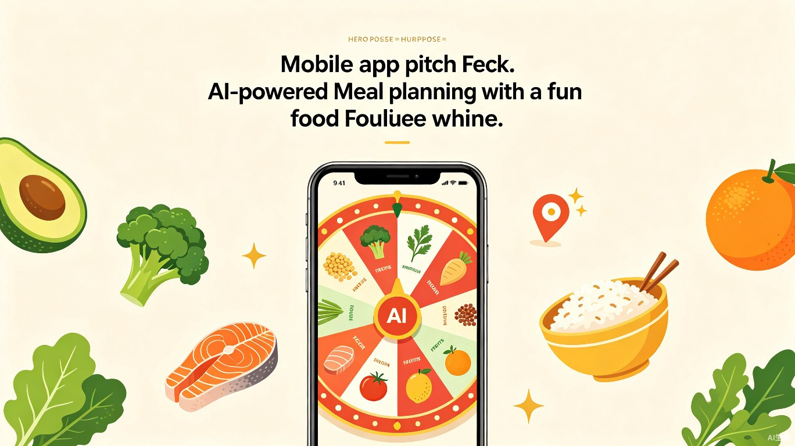

食运转轮 AI 饮食规划
让每天的饮食选择，变成一场健康又有趣的小冒险

创意名称 + 创意介绍
食运转轮 AI 饮食规划 是一款搭载饮食规划 AI 智能体的手机 App，融合体检数据、周边餐饮数据库与随机转轮趣味选餐功能，为每位用户生成量身定制的三餐方案。
想解决什么问题
当下食物选择过于繁杂，普通用户不懂科学配餐，减脂、养生人群难以匹配适配自身身体的外卖与食材，日常选餐内耗严重。
为什么会想到做这个
随着社会和经济发展，人们面对的选择已经过度饱和。我们希望让大家在保证健康和安全的前提下节省精力，并带来一些小惊喜，把每天都要做的饮食选择变成一件有意思的事。
产品形态
一款搭载 AI 智能体的手机 App。产品依托用户身高、体重、体检报告搭建专属身体模型，测算基础代谢与每日营养缺口，结合减脂、增肌、调养等目标，倒推碳水、蛋白、维生素摄入标准。
App 会搭建 2/4/6 公里外卖食物数据库，通过随机转轮趣味抽取当日营养品类，自动生成适配个人健康状况的三餐方案，并随身体变化动态调整食谱，把枯燥控餐变成趣味小游戏。
目标用户及痛点
面向哪些用户
上班族
久坐、外卖依赖、无暇研究营养搭配，希望快速获得可执行的点单建议。
健身人群
有减脂、增肌、塑形目标，需要精准控制碳水、蛋白质和微量元素摄入。
亚健康体检人群
体检报告提示血脂、血糖、尿酸等异常，希望通过饮食调理改善指标。
在什么场景下使用
每日纠结点外卖
午餐时间不知道吃什么，打开 App 一键转动食运，获得附近合规商家推荐。
根据体检报告调整饮食
拿到体检报告后输入关键指标，AI 自动给出阶段性饮食禁忌与营养侧重。
健身后规划三餐
训练日根据运动强度动态调整蛋白质与碳水比例，让训练效果最大化。
均衡营养搭配
想了解一顿外卖是否营养均衡，App 会给出可视化分析与替代建议。
当前痛点
核心功能：趣味食运转轮
我们用一个可交互的「食运转轮」把枯燥的营养决策游戏化。点击下方按钮，体验 App 如何帮你随机抽取今日重点营养品类。
点击「转动食运」，看看今天 AI 为你抽中了哪类营养主角
转轮结果并非完全随机：后台 AI 会根据你的身体模型、饮食目标和周边外卖供给，为每个品类动态调整权重。比如减脂期会提高「优质蛋白」和「膳食纤维」的出现概率，增肌期则更偏向「复合碳水」和「蛋白质」。
产品工作流程
flowchart LR
A[用户输入
身高/体重/体检报告] --> B[AI 身体模型]
B --> C[计算基础代谢
与营养缺口]
C --> D[设定饮食目标
减脂/增肌/调养]
D --> E[生成每日营养标准]
E --> F[食运转轮抽取
重点营养品类]
F --> G[匹配 2/4/6km
合规外卖与食材]
G --> H[生成三餐方案
一键点单]
H --> I[跟踪身体变化
动态调整食谱]
I --> B
个性化营养模型示例
以一位有减脂目标的上班族女性为例，App 会根据其基础代谢、活动量和体检指标，生成如下营养目标雷达图。随着体重、体脂和体检数据的变化，图形会实时更新。
价值与意义
效率提升
AI 自动完成营养测算、周边合规食物筛选、三餐搭配全套流程，省去用户查阅膳食知识、对比外卖的大量时间，一键输出可直接点单的饮食方案。